왜 폰을 SMS 서버로 쓰나요
웹사이트나 앱을 만들다 보면 프로그램이 문자를 보내야 할 때가 있어요. 전화번호를 넣으면 OTP(One-Time Password)가 오는 로그인 화면이 대표적이고, 주문이나 장애 알림을 문자로 보내는 경우도 있어요. 영상은 쇼핑몰 로그인 창에 전화번호를 넣는 장면으로 이 상황을 보여 줘요.
이런 문자는 보통 Twilio 같은 업체에 맡겨요. 아래는 영상에 나온 Twilio의 인도 요금표예요. 맨 위 'International Numbers' 줄의 SMS 발신(Outbound) 칸에 건당 0.0832달러가 적혀 있어요.
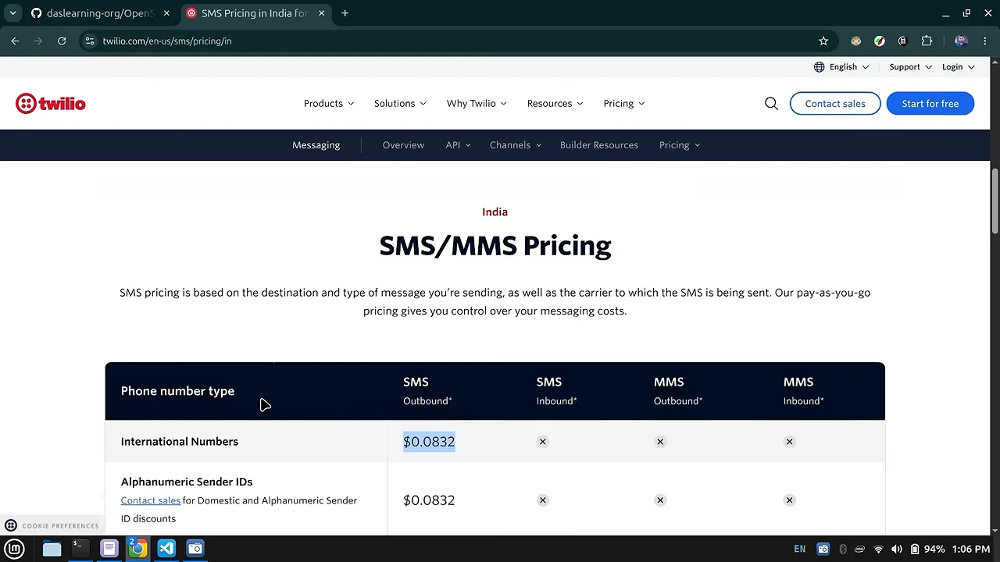
발표자의 제안은 이래요. SIM 카드가 꽂힌 안드로이드 폰에서 서버를 돌리고, API 호출이 들어오면 그 폰이 직접 문자를 보내게 하는 거예요. 폰이 곧 SMS 게이트웨이가 되는 셈이에요. 아래 그림은 영상 후반 데모의 흐름을 한 장으로 옮긴 거예요.
이걸 위해 발표자가 만든 오픈소스 프로젝트가 OpenSMS예요. GitHub README 맨 위에 '안드로이드 폰을 SMS API 서버로 바꿔 준다', '오픈소스이고 광고 없이 개인정보를 지킨다'는 두 가지 특징이 적혀 있어요. 오른쪽 Releases 칸에는 최신 버전 0.1.0이 보여요.

설치: Play Protect와 제한된 설정 넘기기
설치 파일은 GitHub 저장소의 Releases 페이지에 있어요. 왼쪽 브라우저 화면의 Assets 칸에서 opensms-0.1.0-arm64-v8a.apk(35.5MB)가 보여요. 발표자는 이 APK를 미리 폰에 받아 두고, 오른쪽 폰 화면처럼 파일 탐색기에서 열어요.
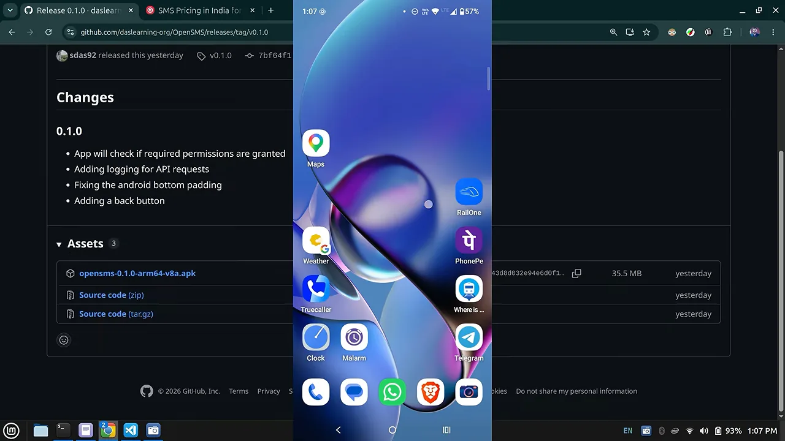
첫 번째 관문: Play Protect
그런데 설치를 누르면 바로 막혀요. 폰 화면 위쪽에 'Google Play Protect — App blocked to protect your device'가 뜨고, 그 위로 'OpenSMS — App not installed' 창이 겹쳐 있어요. SMS 권한을 쓰는 앱을 Play 스토어 밖에서 깔려고 해서 생긴 일이에요.
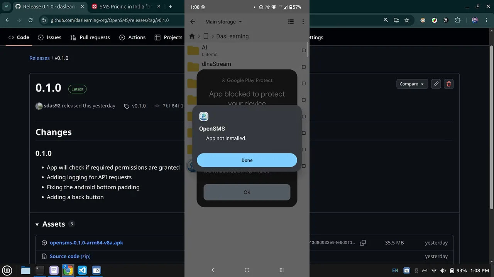
그래서 Play Protect를 잠시 꺼요. Play 스토어에서 프로필 아이콘을 누르고 Play Protect로 들어가면 아래 화면이 나와요. 오른쪽 위 톱니바퀴를 눌러 검사를 끄고, 지문으로 한 번 확인해요.
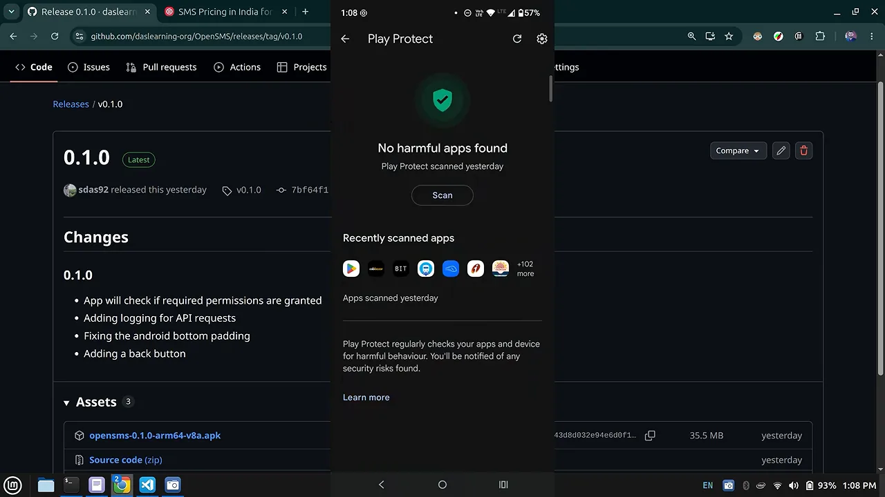
두 번째 관문: 제한된 설정
Play Protect를 끄고 다시 설치하면 이번엔 깔려요. 앱을 열면 권한을 묻는데, 여기서 또 막혀요. 가운데 창에 'App was denied access to SMS'가 떠요. Play 스토어처럼 믿을 수 있는 출처에서 온 앱이 아니라서 SMS 권한을 줄 수 없다는 뜻이에요.
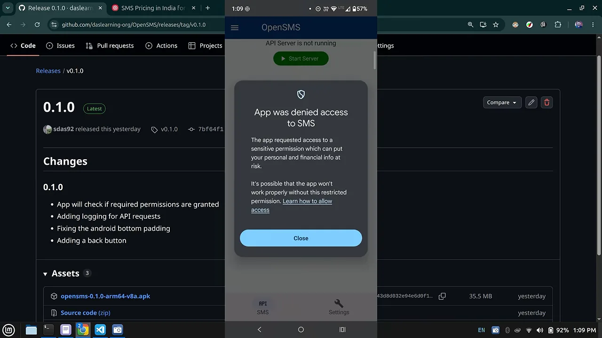
SMS 권한을 풀려면 앱 아이콘을 길게 눌러 '앱 정보'로 가요. 설정 → 앱 → OpenSMS로 가도 같아요. 권한 화면의 SMS 항목은 회색으로 잠겨 있으니, 앱 정보 화면으로 돌아와 오른쪽 위 점 세 개를 눌러요. 아래처럼 'Allow restricted settings' 메뉴가 나와요.
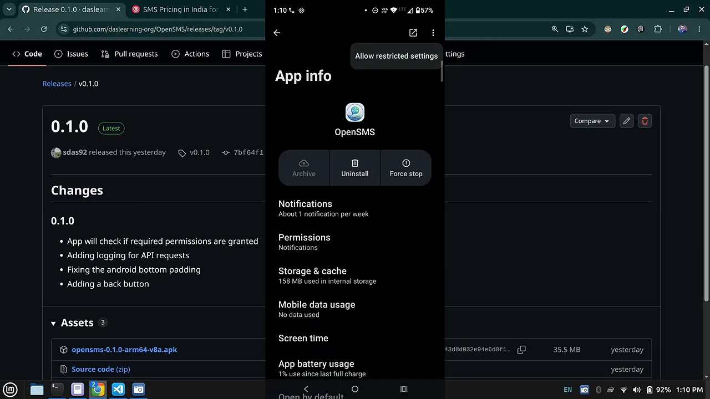
지문으로 확인하고 다시 권한 → SMS로 들어가면, 아까 회색이던 선택지를 고를 수 있어요. 아래 화면에서는 'Allow'에 표시가 들어가 있어요.
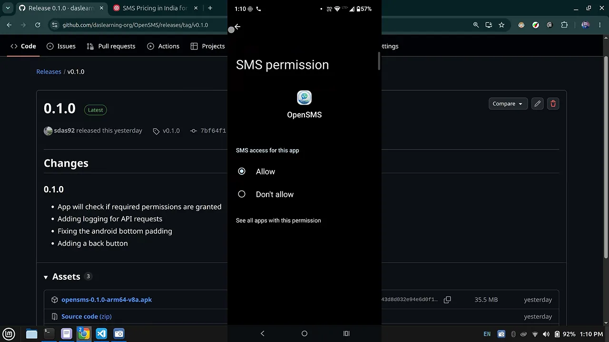
정리하면 설치에서 넘어야 할 단계는 이래요. README의 Quickstart Guide에도 같은 순서가 적혀 있어요.
- Releases에서 APK를 받아 폰에 둬요
- Play 스토어에서 Play Protect를 잠시 꺼요 — 프로필 아이콘 → Play Protect → 톱니바퀴. APK를 다시 누르면 설치가 끝까지 진행돼요
- 앱을 열고 알림 권한을 허용해요
- 앱 정보 → 점 세 개 → 제한된 설정 허용 권한 → SMS에서 Allow를 고를 수 있어요
- SMS 권한을 허용하고 앱을 다시 열어요
앱 설정과 API 키 만들기
권한을 다 주고 앱을 다시 열면 화면은 단순해요. 서버를 켜는 버튼 하나가 있고, 아래 탭에서 설정으로 갈 수 있어요. 설정 화면에는 항목이 세 개뿐이에요.
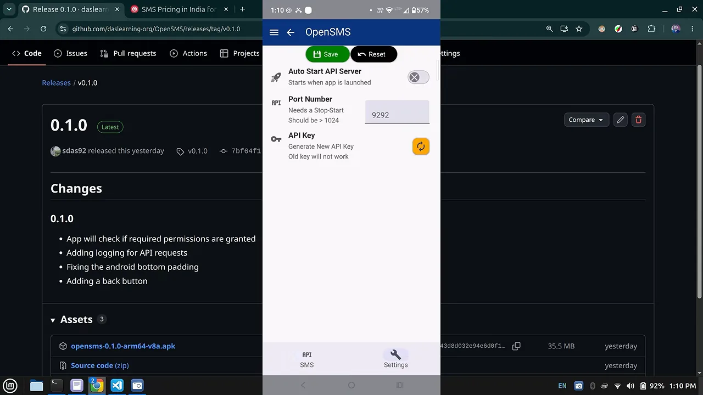
| 설정 | 화면에 적힌 설명 | 영상에서는 |
|---|---|---|
| Auto Start API Server | 앱을 켜면 서버도 같이 켜져요 | 꺼 둬요 |
| Port Number | 바꾸면 서버를 껐다 켜야 하고, 1024보다 커야 해요 | 기본값 9292 그대로 |
| API Key | 새 키를 만들면 이전 키는 더 이상 안 먹어요 | 서버를 처음 켤 때 만들어요 |
API 키는 설정에서 만들어도 되고, 서버를 처음 켤 때 만들어도 돼요. 발표자는 API 탭에서 Start Server를 눌러요. 아직 키가 없으니 'Generate API Key' 창이 떠요. 창 안의 문구는 '새 키를 만들면 이전 키는 모두 무효가 된다'는 경고예요.
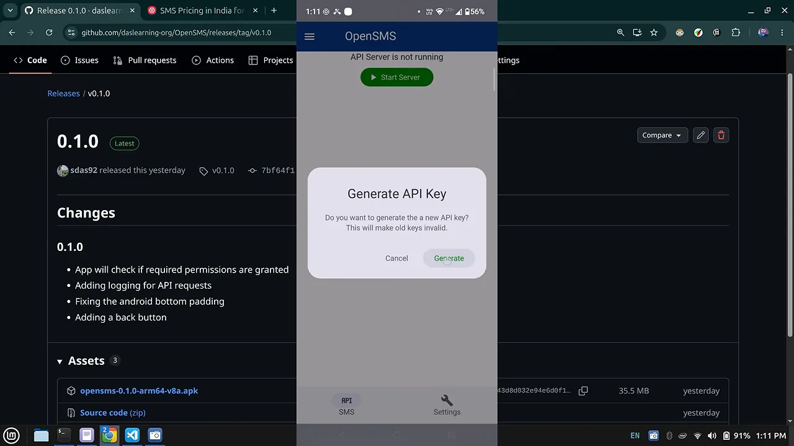
Generate를 누르면 'Your New API Key' 창에 키가 나와요. 안내 문구를 보면 키는 이미 클립보드에 복사돼 있고, 이 화면은 한 번만 나온다고 적혀 있어요. 발표자는 키를 메신저 대화창에 붙여 넣어 보관해요. 놓쳤다면 창의 Copy 버튼으로 다시 복사할 수 있어요.
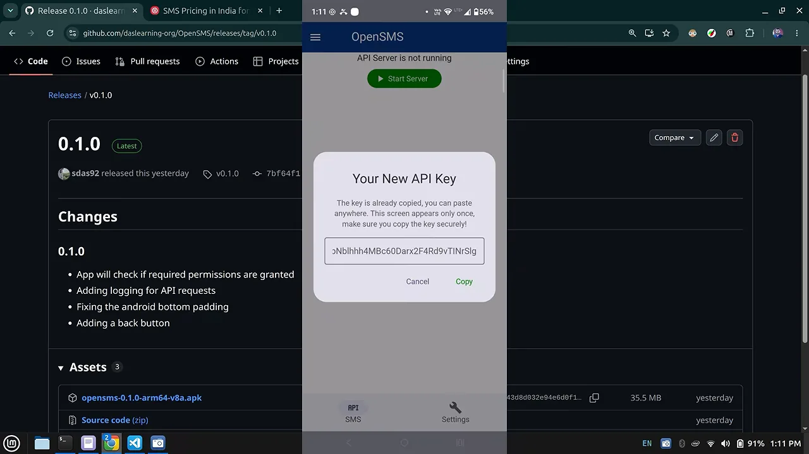
창을 닫고 Start Server를 누르면 서버가 떠요. 위쪽 문구가 'API Server running on port: 9292'로 바뀌고, 버튼은 주황색 Stop Server가 돼요. 왼쪽 위 햄버거 메뉴의 Logs에서 요청 기록을 볼 수 있는데, 아직은 아무 요청도 없어서 비어 있어요.
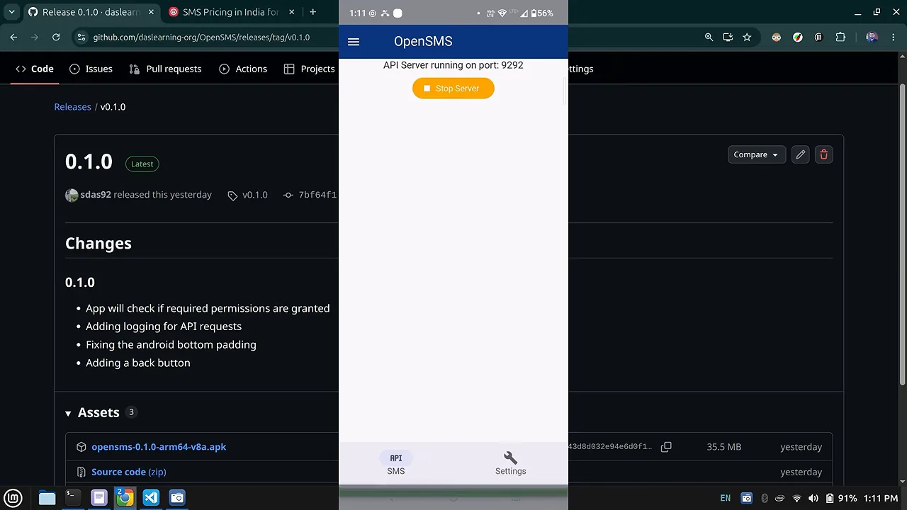
노트북에서 API를 불러 문자 보내기
이제 노트북에서 폰을 불러요. 발표자가 노트북으로 옮긴 이유는 하나예요. 같은 로컬 네트워크라면 다른 기기에서 폰의 API를 바로 부를 수 있다는 걸 보여 주려는 거예요. 필요한 건 폰의 IP 주소뿐이에요.
호출 방법은 저장소 README에 정리돼 있어요. 아래 Quickstart Guide의 1~7번은 앞에서 따라 한 설치 단계 그대로예요. 그 아래 'Test API endpoint'에 curl 예시가 있어요.
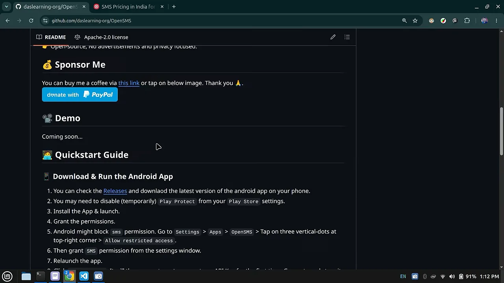
발표자는 README 예시를 편집기에 붙여 IP만 폰 주소로 바꿔요. 키 자리에는 일부러 아무 값 my-key를 넣어요. 아래 터미널 화면의 명령을 부분별로 나누면 표와 같아요.
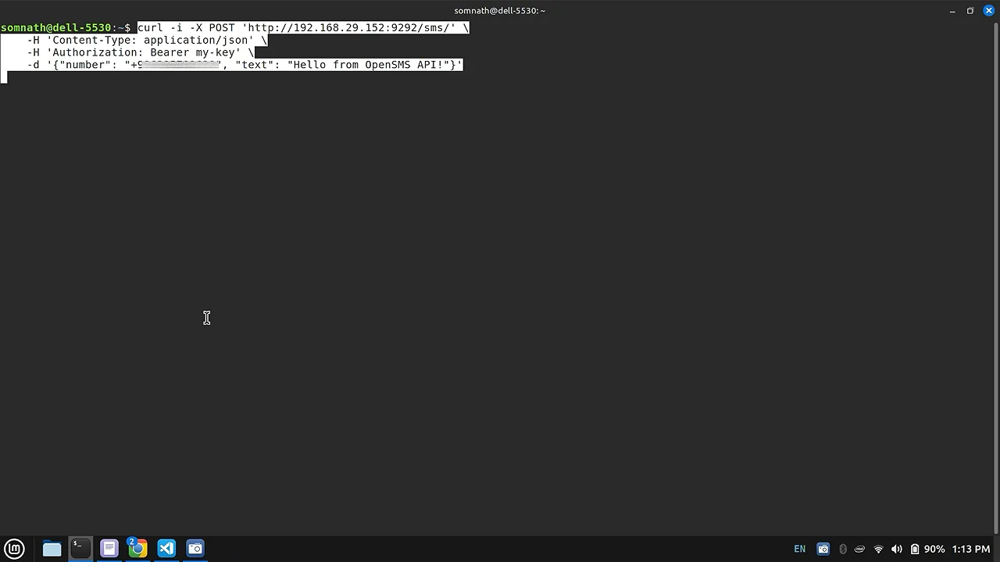
curl -i -X POST 'http://192.168.29.152:9292/sms/' \
-H 'Content-Type: application/json' \
-H 'Authorization: Bearer my-key' \
-d '{"number": "+91…", "text": "Hello from OpenSMS API!"}'| 부분 | 값 | 뜻 |
|---|---|---|
| 주소 | http://<폰 IP>:9292/sms/ | 폰의 IP, 앱에 설정한 포트, 문자 발송 경로 |
| 메서드 | POST | 문자를 보내 달라는 요청 |
| 인증 헤더 | Authorization: Bearer <API 키> | 앱에서 만든 키를 Bearer 토큰으로 실어 보내요 |
| 본문 | {"number": …, "text": …} | 받는 번호와 문자 내용 |
틀린 키로 먼저 보내 보기
결과는 바로 실패예요. 응답 첫 줄이 HTTP/1.1 401 Unauthorized이고, 본문에는 'Invalid or expired API key'가 찍혀요. 오른쪽 폰의 로그 화면에도 '2026-10-16 13:13:14 Authentication failed from IP: 192.168.29.237' 한 줄이 남았어요. 이 IP가 노트북 주소예요.
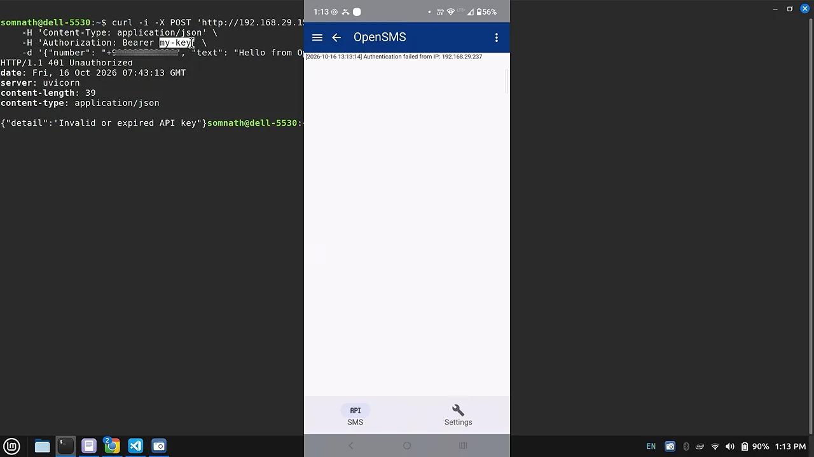
진짜 키로 보내기
다음엔 메신저에 보관해 둔 키를 가져와 Bearer 자리에 넣어요. 발표자는 다른 폰으로 화면 녹화를 켠 뒤 명령을 다시 실행해요. 아래 화면 왼쪽 터미널에는 HTTP/1.1 200 OK와 {"stat":true}가 찍혔어요. 오른쪽 받는 폰의 대화창 맨 아래에는 'Hello from OpenSMS API!'가 'Now' 시각으로 막 도착해 있어요.
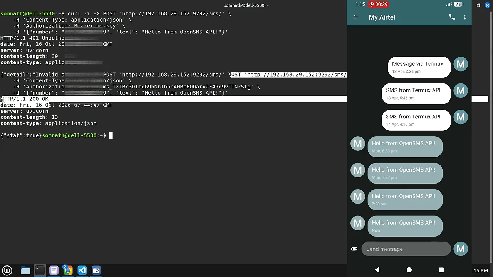
폰의 로그를 다시 열면 세 줄이 쌓여 있어요. 최신 기록이 위에 오니 아래부터 읽으면 순서대로예요.
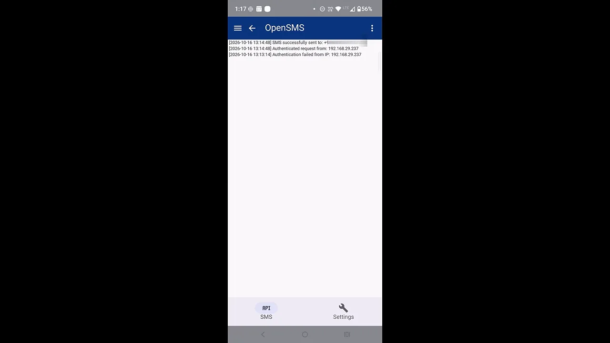
| 보낸 키 | 노트북이 받은 응답 | 폰 로그 |
|---|---|---|
my-key (틀린 키) | 401 Unauthorized, Invalid or expired API key | Authentication failed from IP |
| 앱에서 만든 키 | 200 OK, {"stat":true} | Authenticated request, SMS successfully sent |
발표자는 이렇게 마무리해요. 문자를 언제, 누구에게, 어떤 로직으로 보낼지 전부 내가 정할 수 있고, 폰 한 대가 API 게이트웨이 역할을 한다는 거예요.
Your phone will serve as your API gateway or API server.
폰이 그대로 API 게이트웨이, API 서버가 돼요.
— 영상 06:06